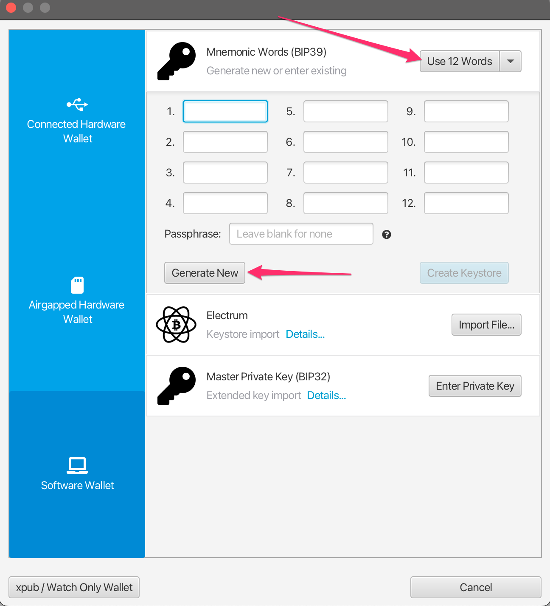
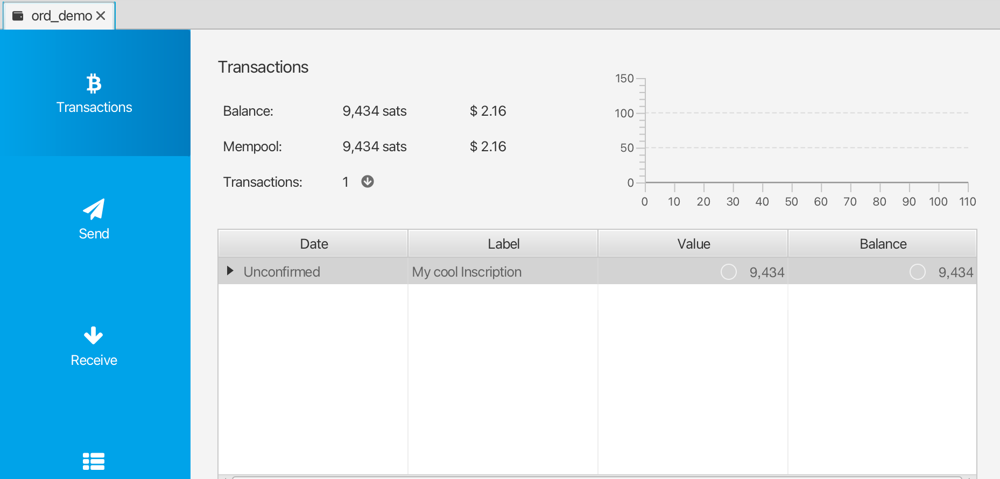

Introduction
This handbook is a guide to ordinal theory. Ordinal theory concerns itself with gros, giving them individual identities and allowing them to be tracked, transferred, and imbued with meaning.
Gros, not groestlcoin, are the atomic, native currency of the Groestlcoin network. One groestlcoin can be sub-divided into 100,000,000 gros, but no further.
Ordinal theory does not require a sidechain or token aside from Groestlcoin, and can be used without any changes to the Groestlcoin network. It works right now.
Ordinal theory imbues gros with numismatic value, allowing them to be collected and traded as curios.
Individual gros can be inscribed with arbitrary content, creating unique Groestlcoin-native digital artifacts that can be held in Groestlcoin wallets and transferred using Groestlcoin transactions. Inscriptions are as durable, immutable, secure, and decentralized as Groestlcoin itself.
D’autres cas d’utilisation plus inhabituels sont possibles : des colored coins (pièces colorées) hors chaîne, une infrastructure de clés publiques avec rotation de clés, une alternative décentralisée au DNS. Pour l’instant, de tels cas d’utilisation sont spéculatifs et n’existent que dans l’esprit de théoriciens d’Ordinals marginaux.
Pour plus de détails sur la théorie ordinale, consultez l’aperçu.
Pour plus de détails sur les inscriptions, consultez la section inscriptions.
Lorsque vous êtes prêt à vous plonger dans le sujet, vous pourriez commencer par les inscriptions, une espèce curieuse d’artefact numérique rendu possible par la théorie ordinale.
Liens
Aperçu de la théorie ordinale
Ordinals are a numbering scheme for gros that allows tracking and transferring individual gros. These numbers are called ordinal numbers. Gros are numbered in the order in which they're mined, and transferred from transaction inputs to transaction outputs first-in-first-out. Both the numbering scheme and the transfer scheme rely on order, the numbering scheme on the order in which gros are mined, and the transfer scheme on the order of transaction inputs and outputs. Thus the name, ordinals.
Technical details are available in the BIP.
Ordinal theory does not require a separate token, another blockchain, or any changes to Groestlcoin. It works right now.
Les nombres ordinaux ont plusieurs représentations différentes:
-
Integer notation:
2099994106992659The ordinal number, assigned according to the order in which the gro was mined. -
Decimal notation:
3891094.16797The first number is the block height in which the gro was mined, the second the offset of the gro within the block. -
Degree notation:
3°111094′214″16797‴. We'll get to that in a moment. -
Percentile notation:
99.99971949060254%. The gro's position in Groestlcoin's supply, expressed as a percentage. -
Name:
satoshi. An encoding of the ordinal number using the charactersathroughz.
Arbitrary assets, such as NFTs, security tokens, accounts, or stablecoins can be attached to gros using ordinal numbers as stable identifiers.
Ordinals is an open-source project, developed on GitHub. The project consists of a BIP describing the ordinal scheme, an index that communicates with a Groestlcoin Core node to track the location of all gros, a wallet that allows making ordinal-aware transactions, a block explorer for interactive exploration of the blockchain, functionality for inscribing gros with digital artifacts, and this manual.
Rareté
Humans are collectors, and since gros can now be tracked and transferred, people will naturally want to collect them. Ordinal theorists can decide for themselves which gros are rare and desirable, but there are some hints…
Groestlcoin has periodic events, some frequent, some more uncommon, and these naturally lend themselves to a system of rarity. These periodic events are:
-
Blocks: A new block is mined approximately every 1 minute, from now until the end of time.
-
Difficulty adjustments: Every 2016 blocks, or approximately every 1.5 days, the Groestlcoin network responds to changes in hashrate by adjusting the difficulty target which blocks must meet in order to be accepted.
-
Halvings: Every 1,050,000 blocks.
-
Cycles: Every 6 * 1,050,000 blocks.
Cela nous donne les niveaux de rareté suivants :
common: Any gro that is not the first gro of its blockuncommon: The first gro of each blockrare: The first gro of each difficulty adjustment periodepic: The first gro of each halving epochlegendary: The first gro of each cyclemythic: The first gro of the genesis block
Which brings us to degree notation, which unambiguously represents an ordinal number in a way that makes the rarity of a gro easy to see at a glance:
A°B′C″D‴
│ │ │ ╰─ Index of gro in the block
│ │ ╰─── Index of block in difficulty adjustment period
│ ╰───── Index of block in halving epoch
╰─────── Cycle, numbered starting from 0
Les théoriciens d’Ordinals utilisent souvent les termes « heure », « minute », « seconde » et « tierce » en référence à A, B, C et D.
Now for some examples. This gro is common:
1°1′1″1‴
│ │ │ ╰─ Not first gro in block
│ │ ╰─── Not first block in difficulty adjustment period
│ ╰───── Not first block in halving epoch
╰─────── Second cycle
This gro is uncommon:
1°1′1″0‴
│ │ │ ╰─ First gro in block
│ │ ╰─── Not first block in difficulty adjustment period
│ ╰───── Not first block in halving epoch
╰─────── Second cycle
This gro is rare:
1°1′0″0‴
│ │ │ ╰─ First gro in block
│ │ ╰─── First block in difficulty adjustment period
│ ╰───── Not the first block in halving epoch
╰─────── Second cycle
This gro is epic:
1°0′1″0‴
│ │ │ ╰─ First gro in block
│ │ ╰─── Not first block in difficulty adjustment period
│ ╰───── First block in halving epoch
╰─────── Second cycle
This gro is legendary:
1°0′0″0‴
│ │ │ ╰─ First gro in block
│ │ ╰─── First block in difficulty adjustment period
│ ╰───── First block in halving epoch
╰─────── Second cycle
And this gro is mythic:
0°0′0″0‴
│ │ │ ╰─ First gro in block
│ │ ╰─── First block in difficulty adjustment period
│ ╰───── First block in halving epoch
╰─────── First cycle
If the block offset is zero, it may be omitted. This is the uncommon gro from above:
1°1′1″
│ │ ╰─ Not first block in difficulty adjustment period
│ ╰─── Not first block in halving epoch
╰───── Second cycle
Rare Gro Supply
Offre totale
common: 10.4 quadrillionpeu commun: 6 929 999rare: 3437épique: 32légendaire: 5mythique: 1
Offre actuelle
common: 8.3 quadrillionuncommon: 745,855rare: 369épique: 3légendaire: 0mythique: 1
At the moment, even uncommon gros are quite rare. As of this writing, 745,855 uncommon gros have been mined - one per 25.6 groestlcoin in circulation.
Noms
Each gro has a name, consisting of the letters A through Z, that get shorter the further into the future the gro was mined. They could start short and get longer, but then all the good, short names would be trapped in the unspendable genesis block.
As an example, 1905530482684727°'s name is "iaiufjszmoba". The name of the last gro to be mined is "a". Every combination of 10 characters or less is out there, or will be out there, someday.
Exotiques
Gros may be prized for reasons other than their name or rarity. This might be due to a quality of the number itself, like having an integer square or cube root. Or it might be due to a connection to a historical event, such as gros from block 1,439,424, the block in which SegWit activated, or 10499999999999999°, the last gro that will ever be mined.
Such gros are termed "exotic". Which gros are exotic and what makes them so is subjective. Ordinal theorists are encouraged to seek out exotics based on criteria of their own devising.
Inscriptions
Gros can be inscribed with arbitrary content, creating Groestlcoin-native digital artifacts. Inscribing is done by sending the gro to be inscribed in a transaction that reveals the inscription content on-chain. This content is then inextricably linked to that gro, turning it into an immutable digital artifact that can be tracked, transferred, hoarded, bought, sold, lost, and rediscovered.
Archéologie
Whether or not ordinals are of interest to NFT archaeologists is an open question! Ordinals were in fact created by Gruve-P in 2014 when he mined the Groestlcoin genesis block. In this sense, ordinals, and especially early ordinals, are certainly of historical interest.
Artéfacts numériques
Imaginez un artefact physique. Disons, une pièce rare, conservée en sécurité pendant d’innombrables années dans la cachette sombre et secrète d’un trésor Viking, que vous déterrez aujourd’hui de vos propres mains. Cette pièce…
...a un propriétaire. Vous. Tant que vous la gardez en sécurité, personne ne peut vous le prendre.
...est complète. Il n’y a aucune partie manquante.
…ne peut être modifiée que par vous. Si vous étiez un marchand et que vous arriviez en Chine au XVIIIe siècle, vous seul pourriez la marquer de votre poinçon.
…ne peut être transmise que par vous. C’est à vous qu’appartient la décision de la vendre, de l’échanger ou de la donner, à qui vous voulez.
Que sont les artefacts numériques ? Il s’agit tout simplement de l’équivalent numérique des artefacts physiques.
Pour qu’une chose numérique soit un artefact numérique, elle doit être comme votre pièce de monnaie :
-
Les artefacts numériques peuvent avoir des propriétaires. Un nombre n’est pas un artefact numérique, car personne ne peut le posséder.
-
Les artefacts numériques sont complets. Un NFT qui pointe vers un contenu hors chaîne sur IPFS ou Arweave est incomplet et n’est donc pas un artefact numérique.
-
Les artefacts numériques sont sans permission. Un NFT qui ne peut être vendu sans avoir à payer des redevances n’est pas sans permission et n’est donc pas un artefact numérique.
-
Les artefacts numériques ne sont pas censurables. Il peut être possible de modifier des informations dans une base de données centralisée aujourd’hui, mais ça ne sera peut-être plus possible demain, et il ne peut donc s’agir d’un artefact numérique.
-
Les artefacts numériques sont immuables. Un NFT avec une clé de mise à jour n’est pas un artefact numérique.
La définition d’un artefact numérique vise à refléter ce que les NFTs devraient être, ce qu’ils sont parfois et ce que les inscriptions seront toujours, de par leur nature même.
Inscriptions
Inscriptions inscribe gros with arbitrary content, creating groestlcoin-native digital artifacts, more commonly known as NFTs. Inscriptions do not require a sidechain or separate token.
These inscribed gros can then be transferred using groestlcoin transactions, sent to groestlcoin addresses, and held in groestlcoin UTXOs. These transactions, addresses, and UTXOs are normal groestlcoin transactions, addresses, and UTXOS in all respects, with the exception that in order to send individual gros, transactions must control the order and value of inputs and outputs according to ordinal theory.
Le modèle de contenu fonctionne de manière similaire à celui du web. Une inscription se compose d’un type de contenu, également connu sous le nom de type MIME, et du contenu lui-même, qui est une chaîne d’octets. Cela permet de récupérer le contenu de l’inscription à partir d’un serveur web et de créer des entrées HTML qui utilisent le contenu d’autres inscriptions.
Le contenu de l’inscription est entièrement sur la blockchain, stocké dans des scripts taproot (taproot script-path spend scripts). Les scripts taproot ont très peu de restrictions sur ce qu’ils peuvent contenir, et ils bénéficient également de la réduction pour témoins, ce qui rend le stockage du contenu de l’inscription relativement peu coûteux.
Étant donné que les dépenses de script taproot (taproot script spends) ne peuvent être effectuées qu’à partir de sorties taproot existantes, les inscriptions sont réalisées à l’aide d’une procédure d’engagement/de révélation en deux phases. Tout d’abord, dans la transaction d’engagement, une sortie de script taproot est créée qui s’engage à un script contenant le contenu de l’inscription. Ensuite, dans la transaction de révélation, la sortie créée par la transaction d’engagement est dépensée, révélant le contenu de l’inscription sur la blockchain.
Le contenu de l’inscription est sérialisé à l’aide de push de données dans des structures conditionnelles non exécutées, appelées « enveloppes ». Les enveloppes se composent d’un OP_FALSE OP_IF … OP_ENDIF enveloppant un nombre quelconque de push de données. Parce que les enveloppes sont effectivement des opérations nulles, elles ne modifient pas la sémantique du script dans lequel elles sont incluses et peuvent être combinées avec n’importe quel autre script de verrouillage.
Une inscription textuelle contenant la chaîne « Hello, world! » est sérialisée comme suit :
OP_FALSE
OP_IF
OP_PUSH "ord"
OP_PUSH 1
OP_PUSH "text/plain;charset=utf-8"
OP_PUSH 0
OP_PUSH "Hello, world!"
OP_ENDIF
Tout d’abord, un push est fait avec la chaîne ordpour distinguer les inscriptions des autres utilisations des enveloppes.
OP_PUSH 1 indique que le prochain push contient le type de contenu, et OP_PUSH 0 indique que les données suivantes dans le push contiennent le contenu lui-même. Plusieurs pushs de données doivent être utilisés pour les inscriptions volumineuses, car l’une des rares restrictions de taproot est qu’un push de données ne peut pas dépasser 520 octets.
The inscription content is contained within the input of a reveal transaction, and the inscription is made on the first gro of its input. This gro can then be tracked using the familiar rules of ordinal theory, allowing it to be transferred, bought, sold, lost to fees, and recovered.
Contenu
Le modèle de données pour les inscriptions est celui d’une réponse HTTP, permettant au contenu de l’inscription d’être récupéré via un serveur web et affiché dans un navigateur web.
Champs
Les entrées peuvent inclure des champs avant un corps optionnel. Chaque champ se compose de deux pushs de données, une étiquette et une valeur.
Actuellement, le seul champ défini est content-type, avec une étiquette 1,, dont la valeur est le type MIME du corps.
Le début du corps et la fin des champs sont indiqués par un push de données vide.
Les étiquettes non reconnues sont interprétées différemment en fonction de leur caractère pair ou impair, conformément à la règle « il est acceptable d’être impair » utilisée par le réseau Lightning.
Les étiquettes paires sont utilisées pour les champs qui peuvent affecter la création, l’assignation initiale ou le transfert d’une inscription. Par conséquent, les inscriptions avec des champs pairs non reconnus doivent être affichées comme « non liées », c’est-à-dire sans emplacement.
Les étiquettes impaires sont utilisées pour les champs qui n’affectent pas la création, l’attribution initiale ou le transfert, tels que les métadonnées supplémentaires, et peuvent donc être ignorées en toute sécurité.
IDs des inscriptions
Les inscriptions sont contenues dans les entrées d’une transaction de révélation. Pour les identifier, on leur attribue un identifiant comme celui-ci :
521f8eccffa4c41a3a7728dd012ea5a4a02feed81f41159231251ecf1e5c79dai0
La partie précédant le i est l’identifiant de transaction (txid) de la transaction de révélation. Le nombre après le i définit l’indice (commençant à 0) des nouvelles inscriptions effectuées dans la transaction de révélation.
Les inscriptions peuvent se trouver dans des entrées différentes, dans la même entrée ou une combinaison des deux. Dans tous les cas, l’ordre est clair, car un analyseur syntaxique parcourrait les entrées de manière consécutive et rechercherait toutes les enveloppes d’inscription.
| Entrée | Nombre d’inscriptions | Indices |
|---|---|---|
| 0 | 2 | i0, i1 |
| 1 | 1 | i2 |
| 2 | 3 | i3, i4, i5 |
| 3 | 0 | |
| 4 | 1 | i6 |
Sandbox
Les inscriptions HTML et SVG sont placées dans un environnement isolé (sandbox) afin d’empêcher les références à des contenus hors chaîne, ce qui permet de maintenir les inscriptions immuables et autonomes, c’est-à-dire contenues dans l’environnement.
Pour ce faire, les entrées HTML et SVG sont chargées dans des iframes avec l’attribut sandbox et la stratégie de sécurité Content-Security-Policy est ajoutée aux en-têtes.
Métadonnées
Les inscriptions peuvent inclure des métadonnées CBOR, stockées sous forme de pushs de données dans des champs avec étiquette 5. Vu que les pushs de données sont limités à 520 octets, les métadonnées de plus de 520 octets doivent être divisées en plusieurs champs avec étiquette 5, qui seront ensuite concaténés avant le décodage.
Les métadonnées sont lisibles par l’humain, et toutes les métadonnées seront affichées à l’utilisateur avec son inscription. Les inscripteurs sont encouragés à réfléchir à la manière dont les métadonnées seront affichées et à les rendre concises et attrayantes.
Les métadonnées sont converties en HTML pour être affichées de la manière suivante :
null(nul),true(vrai),false(faux), les nombres, les éléments flottants (floats) et les chaînes de caractères (strings) sont rendus en texte brut.- Les chaînes d’octets sont rendues sous forme hexadécimale majuscule.
- Les tableaux (arrays) sont rendus en étiquettes
<ul>, chaque élément étant encadré par des étiquettes<li>. - Les tableaux associatifs (maps) sont rendus sous forme d’étiquettes
<dl>, chaque clé étant encadrée par des étiquettes<dt>et chaque valeur étant encadrée par des étiquettes<dd>. - Les étiquettes sont rendues sous forme de l'étiquette, encadrées par une étiquette
<sup>, suivie de la valeur.
CBOR est une spécification complexe qui comporte de nombreux types de données différents et de multiples façons de représenter les mêmes données. Les types de données exotiques, tels que les étiquettes, les éléments flottants et les bignums, ainsi que les encodages tels que les valeurs indéfinies, peuvent ne pas s’afficher correctement, voire pas du tout. Les contributions à ord visant à remédier à ce problème sont les bienvenues.
Exemple
Le CBOR n’étant pas lisible par l’humain, il est représenté sous forme de JSON dans les exemples suivants. Gardez à l’esprit que cela est uniquement pour ces exemples, et que les métadonnées JSON ne seront pas affichées correctement.
Les métadonnées {"foo":"bar","baz":[null,true,false,0]} seraient incluses dans une inscription sous la forme suivante :
OP_FALSE
OP_IF
...
OP_PUSH 0x05 OP_PUSH '{"foo":"bar","baz":[null,true,false,0]}'
...
OP_ENDIF
Et rendues comme suit :
<dl>
...
<dt>metadata</dt>
<dd>
<dl>
<dt>foo</dt>
<dd>bar</dd>
<dt>baz</dt>
<dd>
<ul>
<li>null</li>
<li>true</li>
<li>false</li>
<li>0</li>
</ul>
</dd>
</dl>
</dd>
...
</dl>
Les métadonnées de plus de 520 octets doivent être divisées en plusieurs champs :
OP_FALSE
OP_IF
...
OP_PUSH 0x05 OP_PUSH '{"very":"long","metadata":'
OP_PUSH 0x05 OP_PUSH '"is","finally":"done"}'
...
OP_ENDIF
Ce qui serait ensuite concaténé en : {"very":"long","metadata":"is","finally":"done"}.
Provenance
Le propriétaire d’une inscription peut créer des inscriptions enfants, en établissant d’une manière trustless (sans confiance) la provenance de ces enfants sur la blockchain comme ayant été créés par le propriétaire de l’inscription parent. Cela peut être utilisé pour les collections, de façon à ce que les enfants d’une inscription parent soient membres de la même collection.
Les enfants peuvent avoir des enfants, ce qui permet de créer des hiérarchies complexes. Par exemple, un artiste peut créer une inscription le représentant, avec des sous-inscriptions représentant les collections qu’il a créées, les enfants de ces sous-inscriptions étant des éléments de ces collections.
Spécification
Pour créer une inscription enfant C avec une inscription parent P :
- Créez une transaction d’inscription T comme d’habitude pour C.
- Dépensez le parent P dans l’une des entrées de T.
- Incluez l’étiquette
3, c’est-à-direOP_PUSH 3, dans C, avec la valeur de l’identifiant binaire sérialisé de l’inscription P, sérialisé avec leTXIDde 32 octets, suivi de l’INDEXen format petit-boutien de quatre octets, en omettant les zéros de fin.
NB The bytes of a groestlcoin transaction ID are reversed in their text representation, so the serialized transaction ID will be in the opposite order.
Exemple
Exemple d’une inscription enfant de 000102030405060708090a0b0c0d0e0f101112131415161718191a1b1c1d1e1fi0:
OP_FALSE
OP_IF
OP_PUSH "ord"
OP_PUSH 1
OP_PUSH "text/plain;charset=utf-8"
OP_PUSH 3
OP_PUSH 0x1f1e1d1c1b1a191817161514131211100f0e0d0c0b0a09080706050403020100
OP_PUSH 0
OP_PUSH "Hello, world!"
OP_ENDIF
Notez que la valeur de l’étiquette 3 est binaire, et non hexadécimale, et que pour que l’inscription enfant soit reconnue comme telle, 000102030405060708090a0b0c0d0e0f101112131415161718191a1b1c1d1e1fi0 doit être dépensé comme l’une des entrées de la transaction d’inscription.
Exemple de codage de l’inscription contenant l’ID 000102030405060708090a0b0c0d0e0f101112131415161718191a1b1c1d1e1fi255:
OP_FALSE
OP_IF
…
OP_PUSH 3
OP_PUSH 0x1f1e1d1c1b1a191817161514131211100f0e0d0c0b0a09080706050403020100ff
…
OP_ENDIF
Et de l’inscription contenant l’ID 000102030405060708090a0b0c0d0e0f101112131415161718191a1b1c1d1e1fi256:
OP_FALSE
OP_IF
…
OP_PUSH 3
OP_PUSH 0x1f1e1d1c1b1a191817161514131211100f0e0d0c0b0a090807060504030201000001
…
OP_ENDIF
Notes
L’étiquette 3 est utilisée parce que c’est la première étiquette impaire disponible. Les étiquettes impaires inconnues ne dissocient pas les inscriptions, de sorte que les inscriptions enfants seraient reconnues et suivies par les anciennes versions d’ord.
Une collection peut être fermée en brûlant l’inscription parent de la collection, ce qui garantit qu’aucune autre pièce ne peut être émise dans la collection.
Récursion
Une exception importante au sandboxing est la récursion : L’accès au point de terminaison (endpoint) /content d’ord est autorisé, ce qui permet aux inscriptions d’accéder au contenu d’autres inscriptions en demandant /content/<INSCRIPTION_ID>.
Il existe plusieurs cas d’utilisation intéressants :
-
Combiner le contenu des inscriptions existantes.
-
Publier des extraits de code, des images, des fichiers audio ou des feuilles de style (stylesheet) en tant que ressources publiques partagées.
-
Collections d’art génératif où un algorithme est inscrit en JavaScript, et instancié à partir de multiples inscriptions avec semences uniques.
-
Collections d’images de profil génératives où les accessoires et les attributs sont inscrits en tant qu’images individuelles ou dans un atlas de textures partagé, puis combinés, à la manière d’un collage, dans des combinaisons uniques dans plusieurs inscriptions.
Voici quelques-uns des autres points de terminaison auxquels les inscriptions peuvent accéder :
/blockheight: hauteur du bloc le plus récent./blockhash: hachage du bloc le plus récent./blockhash/<HEIGHT>: hachage du bloc à la hauteur donnée du bloc./blocktime: horodatage UNIX du bloc le plus récent.
Pointer
In order to make an inscription on a sat other than the first of its input, a zero-based integer, called the "pointer", can be provided with tag 2, causing the inscription to be made on the sat at the given position in the outputs. If the pointer is equal to or greater than the number of total sats in the outputs of the inscribe transaction, it is ignored, and the inscription is made as usual. The value of the pointer field is a little endian integer, with trailing zeroes ignored.
An even tag is used, so that old versions of ord consider the inscription to be unbound, instead of assigning it, incorrectly, to the first sat.
This can be used to create multiple inscriptions in a single transaction on different sats, when otherwise they would be made on the same sat.
Examples
An inscription with pointer 255:
OP_FALSE
OP_IF
OP_PUSH "ord"
OP_PUSH 1
OP_PUSH "text/plain;charset=utf-8"
OP_PUSH 2
OP_PUSH 0xff
OP_PUSH 0
OP_PUSH "Hello, world!"
OP_ENDIF
An inscription with pointer 256:
OP_FALSE
OP_IF
OP_PUSH "ord"
OP_PUSH 1
OP_PUSH "text/plain;charset=utf-8"
OP_PUSH 2
OP_PUSH 0x0001
OP_PUSH 0
OP_PUSH "Hello, world!"
OP_ENDIF
An inscription with pointer 256, with trailing zeroes, which are ignored:
OP_FALSE
OP_IF
OP_PUSH "ord"
OP_PUSH 1
OP_PUSH "text/plain;charset=utf-8"
OP_PUSH 2
OP_PUSH 0x000100
OP_PUSH 0
OP_PUSH "Hello, world!"
OP_ENDIF
FAQ de la théorie ordinale
Qu’est-ce que la théorie ordinale ?
Ordinal theory is a protocol for assigning serial numbers to gros, the smallest subdivision of a groestlcoin, and tracking those gros as they are spent by transactions.
These serial numbers are large numbers, like this 804766073970493. Every gro, which is ¹⁄₁₀₀₀₀₀₀₀₀ of a groestlcoin, has an ordinal number.
Does ordinal theory require a side chain, a separate token, or changes to Groestlcoin?
Nope! Ordinal theory works right now, without a side chain, and the only token needed is groestlcoin itself.
À quoi sert la théorie ordinale ?
Collecting, trading, and scheming. Ordinal theory assigns identities to individual gros, allowing them to be individually tracked and traded, as curios and for numismatic value.
Ordinal theory also enables inscriptions, a protocol for attaching arbitrary content to individual gros, turning them into groestlcoin-native digital artifacts.
Comment fonctionne la théorie ordinale ?
Ordinal numbers are assigned to gros in the order in which they are mined. The first gro in the first block has ordinal number 0, the second has ordinal number 1, and the last gro of the first block has ordinal number 4,999,999,999.
Gros live in outputs, but transactions destroy outputs and create new ones, so ordinal theory uses an algorithm to determine how gros hop from the inputs of a transaction to its outputs.
Heureusement, cet algorithme est très simple.
Gros transfer in first-in-first-out order. Think of the inputs to a transaction as being a list of gros, and the outputs as a list of slots, waiting to receive a gro. To assign input gros to slots, go through each gro in the inputs in order, and assign each to the first available slot in the outputs.
Imaginons une transaction avec trois entrées et deux sorties. Les entrées sont à gauche de la flèche et les sorties sont à droite, avec leurs valeurs respectives :
[2] [1] [3] → [4] [2]
Now let's label the same transaction with the ordinal numbers of the gros that each input contains, and question marks for each output slot. Ordinal numbers are large, so let's use letters to represent them:
[a b] [c] [d e f] → [? ? ? ?] [? ?]
To figure out which gro goes to which output, go through the input gros in order and assign each to a question mark:
[a b] [c] [d e f] → [a b c d] [e f]
What about fees, you might ask? Good question! Let's imagine the same transaction, this time with a two gro fee. Transactions with fees send more gros in the inputs than are received by the outputs, so to make our transaction into one that pays fees, we'll remove the second output:
[2] [1] [3] → [4]
The gros eet fn’ont désormais nulle part où aller dans les sorties :``` [a b] [c] [d e f] → [a b c d]
So they go to the miner who mined the block as fees. [The BIP](https://github.com/Groestlcoin/ord-groestlcoin/blob/master/bip.mediawiki) has the details, but in short, fees paid by transactions are treated as extra inputs to the coinbase transaction, and are ordered how their corresponding transactions are ordered in the block. The coinbase transaction of the block might look like this:
[SUBSIDY] [e f] → [SUBSIDY e f]
## Où puis-je trouver les détails techniques approfondis ?
[The BIP!](https://github.com/Groestlcoin/ord-groestlcoin/blob/master/bip.mediawiki)
## Why are gro inscriptions called "digital artifacts" instead of "NFTs"?
Une inscription est un NFT, mais le terme « artefact numérique » est utilisé à la place, parce qu’il est simple, suggestif et familier.
L’expression « artefact numérique » est très suggestive, même pour quelqu’un qui n’a jamais entendu ce terme auparavant. En comparaison, le terme « NFT » est un acronyme qui ne donne aucune indication sur ce qu’il signifie si l’on n’a jamais entendu ce terme auparavant.
En outre, « NFT » ressemble à une terminologie financière, et le mot « fongible » ainsi que le sens du mot « token » tel qu’il est utilisé dans « NFT » ne sont pas courants en dehors des contextes financiers.
## How do gro inscriptions compare to…
### Aux NFTs sur Ethereum ?
_Les inscriptions sont toujours immuables._
Il n’y a tout simplement aucun moyen pour le créateur d’une inscription, ou le propriétaire d’une inscription, de la modifier après qu’elle a été créée.
Les NFTs sur Ethereum peuvent être _immuables_, mais beaucoup ne le sont pas et peuvent être modifiés ou supprimés par le propriétaire du contrat NFT.
Pour s’assurer qu’un NFT sur Ethereum est immuable, le code du contrat doit être analysé, ce qui nécessite une connaissance approfondie de l’EVM et de la sémantique Solidity.
Pour un utilisateur ne disposant pas de compétences techniques, il est assez difficile de déterminer si un NFT sur Ethereum est mutable ou immuable, et les plateformes de NFTs sur Ethereum ne font aucun effort pour distinguer si un NFT est mutable ou immuable et si le code source du contrat est disponible et a été vérifié.
_Le contenu de l’inscription se trouve toujours sur la blockchain du Bitcoin._
Il est impossible pour une inscription de se référer à un contenu qui se trouve en dehors de la blockchain du Bitcoin. Cela rend les inscriptions plus durables, car le contenu ne peut pas être perdu, mais aussi plus rares, car les créateurs d’inscriptions doivent payer des commissions proportionnelles à la taille du contenu.
Le contenu de certains NFTs sur Ethereum est sur la blockchain, mais beaucoup ne l’est pas et est stocké sur des plateformes telles que IPFS ou Arweave, ou sur des serveurs web centralisés. Il n’y a aucune garantie que le contenu stocké sur IPFS continuera d’être disponible ; en fait, quelques contenus de NFTs qui étaient stockés sur IPFS ont déjà été perdus. Les plateformes telles qu’Arweave reposent sur des hypothèses économiques et sont susceptibles d’échouer de manière catastrophique lorsque ces hypothèses ne seront plus satisfaites. Les serveurs web centralisés pourraient disparaître à tout moment.
Il est très difficile pour un utilisateur non technique de déterminer où est stocké le contenu d’un NFT sur Ethereum.
_Les inscriptions sont beaucoup plus simples._
Les NFTs sur Ethereum dépendent du réseau et de la machine virtuelle Ethereum, qui sont très complexes, évoluent constamment et introduisent des changements par le biais de hard forks incompatibles avec des versions précédentes.
Inscriptions, on the other hand, depend on the Groestlcoin blockchain, which is relatively simple and conservative, and which introduces changes via backwards-compatible soft forks.
_Les inscriptions sont plus sûres._
Inscriptions inherit Groestlcoin's transaction model, which allow a user to see exactly which inscriptions are being transferred by a transaction before they sign it. Inscriptions can be offered for sale using partially signed transactions, which don't require allowing a third party, such as an exchange or marketplace, to transfer them on the user's behalf.
En comparaison, les NFTs sur Ethereum sont criblés de vulnérabilités en matière de sécurité pour l’utilisateur final. Il est courant de signer des transactions à l’aveugle, d’accorder des autorisations illimitées à des applications tierces sur les NFTs d’un utilisateur et d’interagir avec des smart contracts complexes et imprévisibles. Cela crée un champ de mines plein de dangers pour les utilisateurs de NFTs sur Ethereum qui ne sont tout simplement pas une préoccupation pour les théoriciens d’Ordinals.
_Les inscriptions sont plus rares._
Inscriptions require groestlcoin to mint, transfer, and store. This seems like a downside on the surface, but the raison d'etre of digital artifacts is to be scarce and thus valuable.
Les NFTs sur Ethereum, en revanche, peuvent être créés en quantités virtuellement illimitées en une seule transaction, ce qui les rend intrinsèquement moins rares, et donc potentiellement moins précieux.
_Les inscriptions ne prétendent pas prendre en charge les redevances sur la blockchain._
En théorie, la mise en œuvre des redevances dans le cadre de la blockchain semble être une bonne chose, mais sa mise en pratique pose des problèmes importants. Les paiements de redevances ne peuvent pas être implémentés sur la blockchain sans restrictions complexes et intrusives. À l’heure actuelle, l’écosystème des NFTs sur Ethereum est confronté à des problèmes dus à la confusion générée autour des redevances et réalise collectivement que les redevances sur la blockchain, qui ont été présentées aux artistes comme un avantage des NFTs, ne sont pas possibles, tandis que les plateformes sont entraînées dans une course vers le bas et éliminent déjà la prise en charge des redevances.
Les inscriptions évitent totalement cette situation en ne faisant aucune fausse promesse de prise en charge des redevances sur la blockchain, évitant ainsi la confusion, le chaos et la négativité de la situation qui survient avec les NFTs sur Ethereum.
_Les inscriptions ouvrent la voie à de nouveaux marchés._
Groestlcoin's market capitalization and liquidity are greater than Ethereum's by a large margin. Much of this liquidity is not available to Ethereum NFTs, since many Groestlcoiners prefer not to interact with the Ethereum ecosystem due to concerns related to simplicity, security, and decentralization.
Such Groestlcoiners may be more interested in inscriptions than Ethereum NFTs, unlocking new classes of collector.
_Les inscriptions disposent d’un modèle de données plus riche._
Une entrée se compose du type de contenu, appelé type MIME, et d’une chaîne d’octets arbitraire constituant le contenu. Il s’agit du même modèle de données que celui utilisé par le web, qui permet au contenu de l’inscription d’évoluer avec le web et de prendre en charge tout type de contenu supporté par les navigateurs web, sans qu’il soit nécessaire de modifier le protocole sous-jacent.
## Les inscriptions pour…
### Les artistes
_Inscriptions are on Groestlcoin._ Groestlcoin is the digital currency with the highest status and greatest chance of long-term survival. If you want to guarantee that your art survives into the future, there is no better way to publish it than as inscriptions.
_Cheaper on-chain storage._ At $0,40 per GRS and the minimum relay fee of 1 gro per vbyte, publishing inscription content costs $0.0025 per 1 million bytes.
_Les inscriptions n’en sont qu’à leurs débuts !_ Les inscriptions sont encore en cours de développement et n’ont pas encore été lancées sur le réseau principal. Cela vous donne l’occasion d’être un adopteur précoce et d’explorer ce medium à mesure qu’il évolue.
_Les inscriptions sont simples._ Il n’est pas nécessaire d’écrire ou de comprendre les smart contracts.
_Inscriptions unlock new liquidity._ Inscriptions are more accessible and appealing to groestlcoin holders, unlocking an entirely new class of collector.
_Les inscriptions sont conçues pour les artefacts numériques._ Les inscriptions sont conçues dès le départ pour prendre en charge les NFTs, et présentent un meilleur modèle de données, avec des caractéristiques telles que des symboles globalement uniques et une provenance améliorée.
_Les inscriptions ne prennent pas en charge les redevances sur la blockchain._ Cela peut être considéré comme un point négatif, mais cela dépend du point de vue de chacun. Bien que les redevances sur la blockchain aient grandement bénéficié aux créateurs, elles ont également généré une grande confusion dans l’écosystème des NFTs sur Ethereum. À l’heure actuelle, l’écosystème est aux prises avec ce problème et s’est engagé dans une course vers le bas, vers un avenir où les redevances seront facultatives. Les inscriptions ne prennent pas en charge les redevances sur la blockchain, car elles sont techniquement irréalisables. Si vous décidez de créer des inscriptions, vous pouvez contourner cette limitation de plusieurs manières : en retenant une partie de vos inscriptions pour les vendre ultérieurement, afin de bénéficier d’une appréciation future, ou en offrant peut-être des avantages aux utilisateurs qui respectent les redevances facultatives.
### Les collectionneurs
_Les inscriptions sont simples, claires et ne réservent aucune surprise._ Elles sont toujours immuables et sur la blockchain Bitcoin, sans qu’aucune diligence particulière ne soit requise.
_Inscriptions are on Groestlcoin._ You can verify the location and properties of inscriptions easily with Groestlcoin full node that you control.
### Groestlcoiners
Let me begin this section by saying: the most important thing that the Groestlcoin network does is decentralize money. All other use-cases are secondary, including ordinal theory. The developers of ordinal theory understand and acknowledge this, and believe that ordinal theory helps, at least in a small way, Groestlcoin's primary mission.
Digital artifacts have merit. There are, of course, a great deal of NFTs that are ugly, stupid, and fraudulent. However, there are many that are fantastically creative, and creating and collecting art has been a part of the human story since its inception, and predates even trade and money, which are also ancient technologies.
Groestlcoin provides an amazing platform for creating and collecting digital artifacts in a secure, decentralized way, that protects users and artists in the same way that it provides an amazing platform for sending and receiving value, and for all the same reasons.
Ordinals and inscriptions increase demand for Groestlcoin block space, which increase Groestlcoin's security budget, which is vital for safeguarding Groestlcoin's transition to a fee-dependent security model, as the block subsidy is halved into insignificance.
Inscription content is stored on-chain, and thus the demand for block space for use in inscriptions is unlimited. This creates a buyer of last resort for _all_ Groestlcoin block space. This will help support a robust fee market, which ensures that Groestlcoin remains secure.
Inscriptions also counter the narrative that Groestlcoin cannot be extended or used for new use-cases. Inscriptions provide a counter argument which is easy to understand, and which targets a popular and proven use case, NFTs, which makes it highly legible.
If inscriptions prove, as the authors hope, to be highly sought after digital artifacts with a rich history, they will serve as a powerful hook for Groestlcoin adoption: come for the fun, rich art, stay for the decentralized digital money.
Inscriptions are an extremely benign source of demand for block space. Unlike, for example, stablecoins, which potentially give large stablecoin issuers influence over the future of Groestlcoin development, or DeFi, which might centralize mining by introducing opportunities for MEV, digital art and collectables on Groestlcoin, are unlikely to produce individual entities with enough power to corrupt Groestlcoin. Art is decentralized.
Inscription users and service providers are incentivized to run Groestlcoin full nodes, to publish and track inscriptions, and thus throw their economic weight behind the honest chain.
Ordinal theory and inscriptions do not meaningfully affect Groestlcoin's fungibility. Groestlcoin users can ignore both and be unaffected.
We hope that ordinal theory strengthens and enriches groestlcoin, and gives it another dimension of appeal and functionality, enabling it more effectively serve its primary use case as humanity's decentralized store of value.Contribuer à ord
Étapes suggérées
- Trouvez un problème sur lequel vous voulez travailler.
- Déterminez quelle pourrait être la première mesure à prendre pour résoudre le problème. Cela pourrait se faire sous la forme d’un code, d’une recherche, d’une proposition, ou en suggérant qu’il soit clos, si le problème est obsolète ou s’il n’était pas une bonne idée dès le départ.
- Commentez le problème en décrivant les grandes lignes de la première étape que vous suggérez et demandez un retour d’information. Bien sûr, vous pourriez vous lancer immédiatement dans l’écriture du code ou de tests, mais cela vous évitera de gaspiller des efforts si le problème n’est plus d’actualité, s’il n’est pas clairement spécifié, s’il est bloqué ou s’il n’est pas prêt à être implémenté.
- Si le problème nécessite une modification du code ou la correction d’un bogue, ouvrez un brouillon de demande de tirage (pull request) avec des tests et demandez des suggestions. Cela permet de s’assurer que tout le monde est d’accord sur ce qui doit être fait, ou sur la première étape de la résolution du problème. De plus, puisque des tests sont nécessaires, le fait de les écrire en premier permet de confirmer que le changement peut être testé facilement.
- Tapez de façon aléatoire sur le clavier jusqu’à ce que les tests passent, et réusinez le code jusqu’à ce qu’il soit prêt à être soumis.
- Marquez la demande de tirage comme prête à être révisée.
- Révisez la demande de tirage si nécessaire.
- Et finalement, fusionnez-la !
Commencez modestement
Des petits changements vous permettront d’avoir un impact rapide, et si vous faites fausse route, vous n’aurez pas perdu beaucoup de temps.
Voici quelques idées pour des problèmes mineurs :
- Ajoutez un nouveau test ou un cas de test qui augmente la couverture des tests
- Ajoutez ou améliorez la documentation
- Trouvez un problème nécessitant davantage de recherche, effectuez cette recherche et résumez-la dans un commentaire
- Trouvez un problème obsolète et indiquez qu’il peut être clos dans un commentaire
- Identifiez un problème qui ne devrait pas être traité, et fournissez des commentaires constructifs expliquant pourquoi vous pensez que c’est le cas
Fusionnez tôt et souvent
Divisez les tâches importantes en plusieurs étapes plus petites, qui progressent individuellement. En cas de bogue, vous pouvez ouvrir une demande de tirage qui ajoute un test ignoré défaillant. Cela peut être fusionné, et l’étape suivante peut être de corriger le bogue et de désactiver (unignore) l’option ignorant le test. Effectuez des recherches ou des tests et faites un rapport sur vos résultats. Divisez une fonctionnalité en de petites sous-fonctionnalités et implémentez-les une par une.
Trouver un moyen de réduire la taille d’une demande de tirage volumineuse en demandes de tirages plus petites, de façon à ce que chacune puisse être fusionnée individuellement, est un art qui vaut la peine d’être pratiqué. Le défi consiste à s’assurer que chaque demande de tirage représente une amélioration en soi.
Je m’efforce de suivre ce conseil moi-même et je m’en sors toujours mieux quand je le fais.
Les petites modifications sont rapides à rédiger, à réviser et à fusionner, ce qui est beaucoup plus amusant que de travailler sur une seule demande de tirage géante qui prend une éternité à rédiger, à réviser et à fusionner. Les petites modifications ne prennent pas beaucoup de temps, donc si vous devez arrêter de travailler sur une petite modification, vous n’aurez pas perdu beaucoup de temps par rapport à une modification plus importante qui exige de nombreuses heures de travail. La soumission rapide d’une demande de tirage améliore un peu le projet, mais de façon immédiate, au lieu de devoir attendre longtemps pour obtenir une amélioration plus importante. Les petites modifications sont moins susceptibles d’entraîner des conflits de fusion. Comme le disaient les Athéniens : Les plus rapides commettent ce qu’ils veulent, tandis que les plus lents sont contraints de fusionner ce qui est possible.
Sollicitez de l’aide
Si vous êtes bloqué pendant plus de 15 minutes, demandez de l’aide dans des espaces tels que le Discord de Rust, sur Stack Exchange, ou dans le cadre d’une question ou d’une discussion au sein du projet.
Pratiquez le débogage par hypothèse
Formulez une hypothèse sur la cause du problème. Trouvez comment vérifier cette hypothèse et effectuez les tests appropriés. Si cela fonctionne, parfait, vous avez résolu le problème, ou du moins vous savez maintenant comment le faire. Dans le cas contraire, recommencez en formulant une nouvelle hypothèse.
Prêtez attention aux messages d’erreur
Lisez tous les messages d’erreur et ne tolérez pas les avertissements.
Faire un don
Ordinals is an open-source project by Groestlcoin in development since early 2023.
You can donate here: https://www.groestlcoin.org/donations/
Guides sur la théorie ordinale
See the table of contents for a list of guides, including a guide to the explorer, a guide for gro hunters, and a guide to inscriptions.
Explorateur Ordinals
The ord binary includes a block explorer. We host a instance of the block explorer on mainnet at ordinals.groestlcoin.org, and on signet at ordinals-signet.groestlcoin.org.
Exécuter l'explorateur
Le serveur peut être exécuté localement avec :
ord server
Pour spécifier un port, ajoutez le drapeau --http-port :
ord server --http-port 8080
Pour activer les points de terminaisons JSON-API, ajoutez le drapeau --enable-json-api ou -j (voir ici pour plus d’informations) :
ord --enable-json-api server
Pour tester à quoi ressembleraient vos inscriptions, vous pouvez lancer :
ord preview <FILE1> <FILE2> ...
Recherche
La zone de recherche accepte une variété de représentations d’objets.
Blocs
Les blocs peuvent être recherchés par hash, par exemple, le bloc genesis :
00000ac5927c594d49cc0bdb81759d0da8297eb614683d3acb62f0703b639023
Transactions
Transactions can be searched by hash, for example, the block 1 coinbase transaction:
cf72b5842b3528fd7f3065ba9e93c50a62e84f42b3b7b7a351d910b5e353b662
Sorties
Les sorties de transaction peuvent être recherchées par outpoint, par exemple, la seule sortie de la transaction coinbase du bloc genesis :
3ce968df58f9c8a752306c4b7264afab93149dbc578bd08a42c446caaa6628bb:0
Gros
Gros can be searched by integer, their position within the entire groestlcoin supply:
Par nombre décimal, leur bloc et leur déplacement dans ce bloc :
Par degré sexagésimal, leur cycle, blocs depuis le dernier halving, blocs depuis le dernier ajustement de la difficulté, et déplacement dans leur bloc :
Par leur nom, leur représentation à base 26 à l’aide des lettres de « a » à « z » :
Or by percentile, the percentage of groestlcoin's supply that has been or will have been issued when they are mined:
JSON-API
Vous pouvez exécuter ord avec le drapeau --enable-json-api pour accéder à des points de terminaison qui renvoient des réponses JSON au lieu de HTML si vous définissez l’en-tête HTTP Accept: application/json. La structure de ces objets suit de près ce qui est montré dans HTML. Ces points de terminaison sont les suivants :
/inscription/<INSCRIPTION_ID>/inscriptions/inscriptions/block/<BLOCK_HEIGHT>/inscriptions/block/<BLOCK_HEIGHT>/<PAGE_INDEX>/inscriptions/<FROM>/inscriptions/<FROM>/<N>/output/<OUTPOINT>/output/<OUTPOINT>/sat/<SAT>
Pour obtenir une liste des 100 dernières inscriptions, il faut procéder comme suit :
curl -s -H "Accept: application/json" 'http://0.0.0.0:80/inscriptions'
Pour obtenir des informations sur un UTXO qui contient des inscriptions, exécutez :
curl -s -H "Accept: application/json" 'http://0.0.0.0:80/output/bc4c30829a9564c0d58e6287195622b53ced54a25711d1b86be7cd3a70ef61ed:0'
Ce qui renvoie :
{
"value": 10000,
"script_pubkey": "OP_PUSHNUM_1 OP_PUSHBYTES_32 156cc4878306157720607cdcb4b32afa4cc6853868458d7258b907112e5a434b",
"address": "grs1pz4kvfpurqc2hwgrq0nwtfve2lfxvdpfcdpzc6ujchyr3ztj6gd9sfr6ayf",
"transaction": "bc4c30829a9564c0d58e6287195622b53ced54a25711d1b86be7cd3a70ef61ed",
"sat_ranges": null,
"inscriptions": [
"6fb976ab49dcec017f1e201e84395983204ae1a7c2abf7ced0a85d692e442799i0"
]
}
Guide d’inscription ordinale
Individual gros can be inscribed with arbitrary content, creating Groestlcoin-native digital artifacts that can be held in a Groestlcoin wallet and transferred using Groestlcoin transactions. Inscriptions are as durable, immutable, secure, and decentralized as Groestlcoin itself.
Working with inscriptions requires a Groestlcoin full node, to give you a view of the current state of the Groestlcoin blockchain, and a wallet that can create inscriptions and perform gro control when constructing transactions to send inscriptions to another wallet.
Groestlcoin Core provides both a Groestlcoin full node and wallet. However, the Groestlcoin Core wallet cannot create inscriptions and does not perform gro control.
This requires ord, the ordinal utility. ord doesn't implement its own wallet, so ord wallet subcommands interact with Groestlcoin Core wallets.
Ce guide couvre :
- Installing Groestlcoin Core
- Syncing the Groestlcoin blockchain
- Creating a Groestlcoin Core wallet
- Using
ord wallet receiveto receive gros - La création d’inscriptions à l’aide de
ord wallet inscribe - L’envoi d’inscriptions à l’aide de
ord wallet send - La réception d’inscriptions avec
ord wallet receive
Obtenir de l’aide
If you get stuck, try asking for help on the Groestlcoin Discord Server, or checking GitHub for relevant issues.
Installing Groestlcoin Core
Groestlcoin Core is available from groestlcoin.org.
Making inscriptions requires Groestlcoin Core 24 or newer.
This guide does not cover installing Groestlcoin Core in detail. Once Groestlcoin Core is installed, you should be able to run groestlcoind -version successfully from the command line. Do NOT use groestlcoin-qt.
Configuring Groestlcoin Core
ord requires Groestlcoin Core's transaction index and rest interface.
To configure your Groestlcoin Core node to maintain a transaction index, add the following to your groestlcoin.conf:
txindex=1
Or, run groestlcoind with -txindex:
groestlcoind -txindex
Details on creating or modifying your groestlcoin.conf file can be found here.
Syncing the Groestlcoin Blockchain
Pour synchroniser la blockchain, exécutez :
groestlcoind -txindex
...et laissez-la s’exécuter jusqu’à ce que getblockcount:
groestlcoin-cli getblockcount
agrees with the block count on a block explorer like the mempool.space block explorer. ord interacts with groestlcoind, so you should leave groestlcoind running in the background when you're using ord.
The blockchain takes about 600GB of disk space. If you have an external drive you want to store blocks on, use the configuration option blocksdir=<external_drive_path>. This is much simpler than using the datadir option because the cookie file will still be in the default location for groestlcoin-cli and ord to find.
Résolution des problèmes
Make sure you can access groestlcoind with groestlcoin-cli -getinfo and that it is fully synced.
If groestlcoin-cli -getinfo returns Could not connect to the server, groestlcoind is not running.
Make sure rpcuser, rpcpassword, or rpcauth are NOT set in your groestlcoin.conf file. ord requires using cookie authentication. Make sure there is a file .cookie in your groestlcoin data directory.
If groestlcoin-cli -getinfo returns Could not locate RPC credentials, then you must specify the cookie file location. If you are using a custom data directory (specifying the datadir option), then you must specify the cookie location like groestlcoin-cli -rpccookiefile=<your_groestlcoin_datadir>/.cookie -getinfo. When running ord you must specify the cookie file location with --cookie-file=<your_groestlcoin_datadir>/.cookie.
Make sure you do NOT have disablewallet=1 in your groestlcoin.conf file. If groestlcoin-cli listwallets returns Method not found then the wallet is disabled and you won't be able to use ord.
Make sure txindex=1 is set. Run groestlcoin-cli getindexinfo and it should return something like
{
"txindex": {
"synced": true,
"best_block_height": 776546
}
}
If it only returns {}, txindex is not set. If it returns "synced": false, groestlcoind is still creating the txindex. Wait until "synced": true before using ord.
If you have maxuploadtarget set it can interfere with fetching blocks for ord index. Either remove it or set whitebind=127.0.0.1:1331.
L’installation de ord
The ord utility is written in Rust and can be built from source. Pre-built binaries are available on the releases page.
Vous pouvez installer le dernier binaire préconstruit à partir de la ligne de commande suivante :
curl --proto '=https' --tlsv1.2 -fsLS https://raw.githubusercontent.com/Groestlcoin/ord-groestlcoin/master/install.sh | bash -s
Une fois ord installé, vous devriez être en mesure d’exécuter :
ord --version
Ce qui indiquera le numéro de version de ord.
Creating a Groestlcoin Core Wallet
ord uses Groestlcoin Core to manage private keys, sign transactions, and broadcast transactions to the Groestlcoin network.
To create a Groestlcoin Core wallet named ord for use with ord, run:
ord wallet create
Receiving Gros
Inscriptions are made on individual gros, using normal Groestlcoin transactions that pay fees in gros, so your wallet will need some gros.
Obtenez une nouvelle adresse à partir de votre portefeuille ord en exécutant :
ord wallet receive
Et envoyez-y des fonds.
Vous pouvez voir les transactions en attente en exécutant :
ord wallet transactions
Une fois la transaction confirmée, vous devriez être en mesure de voir les sorties de transactions avec ord wallet outputs.
Créer du contenu pour les inscriptions
Gros can be inscribed with any kind of content, but the ord wallet only supports content types that can be displayed by the ord block explorer.
En outre, les inscriptions sont incluses dans les transactions, donc plus le contenu est volumineux, plus les frais à payer pour la transaction de l’inscription sont élevés.
Le contenu des inscriptions est inclus dans les témoins de transaction, qui bénéficient de la réduction pour témoins. Afin de calculer le montant approximatif des frais de transaction d’une inscription, divisez la taille du contenu par quatre et multipliez par le taux de frais.
Inscription transactions must be less than 400,000 weight units, or they will not be relayed by Groestlcoin Core. One byte of inscription content costs one weight unit. Since an inscription transaction includes not just the inscription content, limit inscription content to less than 400,000 weight units. 390,000 weight units should be safe.
La création d’inscriptions
Pour créer une inscription avec le contenu de FILE, exécutez :
ord wallet inscribe --fee-rate FEE_RATE FILE
Ord affichera deux identifiants de transaction, l’un pour la transaction d’engagement et l’autre pour la transaction de révélation, ainsi que l’identifiant de l’inscription. Les identifiants d’inscription ont le format TXIDiN, TXID étant l’identifiant de la transaction de révélation et N l’index de l’inscription dans la transaction de révélation.
The commit transaction commits to a tapscript containing the content of the inscription, and the reveal transaction spends from that tapscript, revealing the content on chain and inscribing it on the first gro of the input that contains the corresponding tapscript.
Wait for the reveal transaction to be mined. You can check the status of the commit and reveal transactions using the esplora block explorer.
Une fois que la transaction de révélation a été minée, l’identifiant d’inscription devrait apparaître lorsque vous exécutez :
ord wallet inscriptions
Inscriptions parent-enfant
Les inscriptions parent-enfant permettent ce que l’on appelle des collections en langage courant (voir provenance pour plus d’informations).
Pour faire d’une inscription l’enfant d’une autre, l’inscription parent doit être inscrite et présente dans le portefeuille. Pour choisir un parent, lancez ord wallet inscriptions et copiez l’identifiant de l’inscription (<PARENT_INSCRIPTION_ID>).
Inscrivez maintenant l’inscription enfant et spécifiez le parent comme suit :
ord wallet inscribe --fee-rate FEE_RATE --parent <PARENT_INSCRIPTION_ID> CHILD_FILE
Cette relation ne peut pas être ajoutée rétroactivement, le parent doit être présent lors de la création de l’enfant.
L’envoi d’inscriptions
Demandez au destinataire de générer une nouvelle adresse en exécutant :
ord wallet receive
Envoyez l’inscription en exécutant :
ord wallet send --fee-rate <FEE_RATE> <ADDRESS> <INSCRIPTION_ID>
Voyez la transaction en attente avec la commande :
ord wallet transactions
Une fois que la transaction d’envoi est confirmée, le destinataire peut confirmer la réception en exécutant :
ord wallet inscriptions
La réception d’inscriptions
Générez une nouvelle adresse de réception en utilisant :
ord wallet receive
L’expéditeur peut transférer l’inscription à votre adresse en utilisant :
ord wallet send ADDRESS INSCRIPTION_ID
Voyez la transaction en attente avec la commande :
ord wallet transactions
Une fois que la transaction d’envoi est confirmée, vous pouvez confirmer la réception en exécutant :
ord wallet inscriptions
Gro Hunting
This guide is out of date. Since it was written, the ord binary was changed to only build the full gro index when the --index-sats flag is supplied. Additionally, ord now has a built-in wallet that wraps a Groestlcoin Core wallet. See ord wallet --help.
Ordinal hunting is difficult but rewarding. The feeling of owning a wallet full of UTXOs, redolent with the scent of rare and exotic gros, is beyond compare.
Ordinals are numbers for gros. Every gro has an ordinal number and every ordinal number has a gro.
Préparation
Avant de commencer il vous faudra certaines choses.
-
First, you'll need a synced Groestlcoin Core node with a transaction index. To turn on transaction indexing, pass
-txindexon the command-line:groestlcoind -txindexOr put the following in your Groestlcoin configuration file:
txindex=1Exécutez cette commande et attendez qu’elle rattrape le bout de la chaîne. Une fois cela fait, la commande suivante devrait vous indiquer la hauteur du bloc actuel :
groestlcoin-cli getblockcount -
Deuxièmement, vous aurez besoin d’un index
ordsynchronisé.-
Get a copy of
ordfrom the repo. -
Run
RUST_LOG=info ord index. It should connect to your groestlcoin core node and start indexing. -
Attendez que l’indexation soit terminée.
-
-
Troisièmement, vous aurez besoin d’un portefeuille avec les UTXOs que vous souhaitez rechercher.
Rechercher des ordinals rares
Searching for Rare Ordinals in a Groestlcoin Core Wallet
The ord wallet command is just a wrapper around Groestlcoin Core's RPC API, so searching for rare ordinals in a Groestlcoin Core wallet is Easy. Assuming your wallet is named foo:
-
Chargez votre portefeuille :
groestlcoin-cli loadwallet foo -
Affichez tous les UTXOs rares du portefeuille d’ordinals
foo:ord wallet sats
Searching for Rare Ordinals in a Non-Groestlcoin Core Wallet
The ord wallet command is just a wrapper around Groestlcoin Core's RPC API, so to search for rare ordinals in a non-Groestlcoin Core wallet, you'll need to import your wallet's descriptors into Groestlcoin Core.
Descriptors describe the ways that wallets generate private keys and public keys.
You should only import descriptors into Groestlcoin Core for your wallet's public keys, not its private keys.
Si le descripteur de la clé publique de votre portefeuille est compromis, un attaquant pourra voir les adresses de votre portefeuille, mais vos fonds seront en sécurité.
Si le descripteur de la clé privée de votre portefeuille est compromis, un attaquant peut vider votre portefeuille de ses fonds.
-
Obtenez le descripteur du portefeuille contenant les UTXOs que vous voulez analyser pour identifier s’ils contiennent des ordinals rares. Il ressemblera à quelque chose comme ceci :
wpkh([bf1dd55e/84'/0'/0']xpub6CcJtWcvFQaMo39ANFi1MyXkEXM8T8ZhnxMtSjQAdPmVSTHYnc8Hwoc11VpuP8cb8JUTboZB5A7YYGDonYySij4XTawL6iNZvmZwdnSEEep/0/*)#csvefu29 -
Créez un portefeuille en lecture seule nommé
foo-watch-only:groestlcoin-cli createwallet foo-watch-only true trueN’hésitez pas à lui donner un meilleur nom que
foo-watch-only! -
Chargez le Portefeuille
foo-watch-only:groestlcoin-cli loadwallet foo-watch-only -
Importez les descripteurs de votre portefeuille dans
foo-watch-only:groestlcoin-cli importdescriptors \ '[{ "desc": "wpkh([bf1dd55e/84h/0h/0h]xpub6CcJtWcvFQaMo39ANFi1MyXkEXM8T8ZhnxMtSjQAdPmVSTHYnc8Hwoc11VpuP8cb8JUTboZB5A7YYGDonYySij4XTawL6iNZvmZwdnSEEep/0/*)#tpnxnxax", "timestamp":0 }]'If you know the Unix timestamp when your wallet first started receive transactions, you may use it for the value of
"timestamp"instead of0. This will reduce the time it takes for Groestlcoin Core to search for your wallet's UTXOs. -
Vérifiez que tout a fonctionné correctement :
groestlcoin-cli getwalletinfo -
Affichez les ordinals rares qui se trouvent dans votre portefeuille :
ord wallet sats
Rechercher des ordinals rares dans un portefeuille qui exporte des descripteurs à chemins multiples (multi-path)
Some descriptors describe multiple paths in one descriptor using angle brackets, e.g., <0;1>. Multi-path descriptors are not yet supported by Groestlcoin Core, so you'll first need to convert them into multiple descriptors, and then import those multiple descriptors into Groestlcoin Core.
-
Obtenez d’abord le descripteur à chemins multiples de votre portefeuille. Il ressemblera à quelque chose comme ceci :
wpkh([bf1dd55e/84h/0h/0h]xpub6CcJtWcvFQaMo39ANFi1MyXkEXM8T8ZhnxMtSjQAdPmVSTHYnc8Hwoc11VpuP8cb8JUTboZB5A7YYGDonYySij4XTawL6iNZvmZwdnSEEep/<0;1>/*)#fw76ulgt -
Créez un descripteur pour le chemin de l’adresse de réception :
wpkh([bf1dd55e/84'/0'/0']xpub6CcJtWcvFQaMo39ANFi1MyXkEXM8T8ZhnxMtSjQAdPmVSTHYnc8Hwoc11VpuP8cb8JUTboZB5A7YYGDonYySij4XTawL6iNZvmZwdnSEEep/0/*)Et pour le chemin de l’adresse qui recevra la monnaie restante (change address) :
wpkh([bf1dd55e/84'/0'/0']xpub6CcJtWcvFQaMo39ANFi1MyXkEXM8T8ZhnxMtSjQAdPmVSTHYnc8Hwoc11VpuP8cb8JUTboZB5A7YYGDonYySij4XTawL6iNZvmZwdnSEEep/1/*) -
Obtenez et notez la somme de contrôle du descripteur d’adresse de réception, dans ce cas
tpnxnxax:groestlcoin-cli getdescriptorinfo \ 'wpkh([bf1dd55e/84h/0h/0h]xpub6CcJtWcvFQaMo39ANFi1MyXkEXM8T8ZhnxMtSjQAdPmVSTHYnc8Hwoc11VpuP8cb8JUTboZB5A7YYGDonYySij4XTawL6iNZvmZwdnSEEep/0/*)'{ "descriptor": "wpkh([bf1dd55e/84'/0'/0']xpub6CcJtWcvFQaMo39ANFi1MyXkEXM8T8ZhnxMtSjQAdPmVSTHYnc8Hwoc11VpuP8cb8JUTboZB5A7YYGDonYySij4XTawL6iNZvmZwdnSEEep/0/*)#csvefu29", "checksum": "tpnxnxax", "isrange": true, "issolvable": true, "hasprivatekeys": false }Et pour le descripteur de l’adresse qui recevra la monnaie restante (change address), dans ce cas
64k8wnd7:groestlcoin-cli getdescriptorinfo \ 'wpkh([bf1dd55e/84h/0h/0h]xpub6CcJtWcvFQaMo39ANFi1MyXkEXM8T8ZhnxMtSjQAdPmVSTHYnc8Hwoc11VpuP8cb8JUTboZB5A7YYGDonYySij4XTawL6iNZvmZwdnSEEep/1/*)'{ "descriptor": "wpkh([bf1dd55e/84'/0'/0']xpub6CcJtWcvFQaMo39ANFi1MyXkEXM8T8ZhnxMtSjQAdPmVSTHYnc8Hwoc11VpuP8cb8JUTboZB5A7YYGDonYySij4XTawL6iNZvmZwdnSEEep/1/*)#fyfc5f6a", "checksum": "64k8wnd7", "isrange": true, "issolvable": true, "hasprivatekeys": false } -
Chargez le portefeuille dans lequel vous souhaitez importer les descripteurs :
groestlcoin-cli loadwallet foo-watch-only -
Now import the descriptors, with the correct checksums, into Groestlcoin Core.
groestlcoin-cli \ importdescriptors \ '[ { "desc": "wpkh([bf1dd55e/84h/0h/0h]xpub6CcJtWcvFQaMo39ANFi1MyXkEXM8T8ZhnxMtSjQAdPmVSTHYnc8Hwoc11VpuP8cb8JUTboZB5A7YYGDonYySij4XTawL6iNZvmZwdnSEEep/0/*)#tpnxnxax" "timestamp":0 }, { "desc": "wpkh([bf1dd55e/84h/0h/0h]xpub6CcJtWcvFQaMo39ANFi1MyXkEXM8T8ZhnxMtSjQAdPmVSTHYnc8Hwoc11VpuP8cb8JUTboZB5A7YYGDonYySij4XTawL6iNZvmZwdnSEEep/1/*)#64k8wnd7", "timestamp":0 } ]'If you know the Unix timestamp when your wallet first started receive transactions, you may use it for the value of the
"timestamp"fields instead of0. This will reduce the time it takes for Groestlcoin Core to search for your wallet's UTXOs. -
Vérifiez que tout a fonctionné correctement :
groestlcoin-cli getwalletinfo -
Affichez les ordinals rares qui se trouvent dans votre portefeuille :
ord wallet sats
Exporter des descripteurs
Portefeuille Sparrow
Naviguez jusqu’à l’onglet Settings, puis jusqu’à Script Policy, et appuyez sur le bouton d’édition pour afficher le descripteur.
Transférer des ordinals
The ord wallet supports transferring specific gros. You can also use groestlcoin-cli commands createrawtransaction, signrawtransactionwithwallet, and sendrawtransaction, how to do so is complex and outside the scope of this guide.
Collectionner
Currently, ord is the only wallet supporting gro-control and gro-selection, which are required to safely store and send rare gros and inscriptions, hereafter ordinals.
Il est recommandé d’envoyer, de recevoir et de stocker les ordinals avec ord, mais si vous êtes prudent, il est possible de stocker, et dans certains cas d’envoyer, des ordinals en toute sécurité au moyen d’autres portefeuilles.
As a general note, receiving ordinals in an unsupported wallet is not dangerous. Ordinals can be sent to any groestlcoin address, and are safe as long as the UTXO that contains them is not spent. However, if that wallet is then used to send groestlcoin, it may select the UTXO containing the ordinal as an input, and send the inscription or spend it to fees.
A guide to creating an ord-compatible wallet with Sparrow-GRS Wallet, is available in this handbook.
Please note that if you follow this guide, you should not use the wallet you create to send GRS, unless you perform manual coin-selection to avoid sending ordinals.
Collectionner des inscriptions et des ordinals avec le portefeuille Sparrow
Users who cannot or have not yet set up the ord wallet can receive inscriptions and ordinals with alternative groestlcoin wallets, as long as they are very careful about how they spend from that wallet.
Ce guide fournit des instructions de base pour créer un portefeuille avec Sparrow Wallet qui soit compatible avec ord et qui puisse être importé dans ord par la suite
⚠️⚠️ Avertissement!! ⚠️⚠️
En règle générale, si vous adoptez cette approche, vous devriez utiliser ce portefeuille avec le logiciel Sparrow uniquement en tant que portefeuille de réception.
Do not spend any gros from this wallet unless you are sure you know what you are doing. You could very easily inadvertently lose access to your ordinals and inscriptions if you don't heed this warning.
Configuration du portefeuille et réception
Téléchargez Sparrow Wallet à partir de la page de téléchargement correspondant à votre système d’exploitation.
Sélectionnez File -> New Wallet et créez un nouveau portefeuille appelé ord.

Modifiez le Script Type (type de script) en choisissant Taproot (P2TR) et sélectionnez l’option New or Imported Software Wallet (Portefeuille de logiciel nouveau ou importé).

Sélectionnez Use 12 Words (utiliser 12 mots), puis cliquez sur Generate New (Créer nouveau). Laissez la passphrase (phrase secrète) vide.

Une nouvelle phrase de récupération BIP39 contenant 12 mots sera générée pour vous. Notez-la dans un endroit sûr, car elle vous servira de référence pour accéder à votre portefeuille. Ne communiquez ou ne montrez JAMAIS cette phrase de récupération à qui que ce soit.
Une fois que vous avez noté la phrase de récupération, cliquez sur Confirm Backup (confirmer la sauvegarde).

Saisissez à nouveau la phrase de récupération que vous avez notée, puis cliquez sur Create Keystore (Créer le Keystore).

Cliquez sur Import Keystore.(Importer le Keystore).

Cliquez sur Apply (Appliquer). Ajoutez un mot de passe pour le portefeuille si vous le souhaitez.

Vous disposez maintenant d’un portefeuille compatible avec ord, qui peut être importé dans ord à l’aide de la phrase de récupération BIP39. Pour recevoir des ordinals ou des inscriptions, cliquez sur l’onglet Receive (recevoir) et copiez une nouvelle adresse.
Chaque fois que vous voulez recevoir, vous devriez utiliser une toute nouvelle adresse et ne pas réutiliser les adresses existantes.
Note that groestlcoin is different to some other blockchain wallets, in that this wallet can generate an unlimited number of new addresses. You can generate a new address by clicking on the Get Next Address button. You can see all of your addresses in the Addresses tab of the app.
Vous pouvez ajouter une étiquette à chaque adresse, afin de garder une trace de sa fonction ou de son utilisation.

Validation / visualisation des inscriptions reçues
Une fois que vous avez reçu une inscription, vous verrez une nouvelle transaction dans l’onglet Transactions de Sparrow, ainsi qu’un nouvel UTXO dans l’onglet UTXOs.
Initially this transaction may have an "Unconfirmed" status, and you will need to wait for it to be mined into a groestlcoin block before it is fully received.

Pour suivre le statut de votre transaction, vous pouvez faire un clic droit dessus, sélectionner Copy Transaction ID (Copier l’identifiant de la transaction) et ensuite coller cet identifiant de transaction dans mempool.space.

Once the transaction has confirmed, you can validate and view your inscription by heading over to the UTXOs tab, finding the UTXO you want to check, right-clicking on the Output and selecting Copy Transaction Output. This transaction output id can then be pasted into the ordinals.groestlcoin.org search.
Gel des UTXOs
Comme expliqué ci-dessus, chacune de vos inscriptions est stockée dans une sortie de transaction non dépensée (UTXO). Vous devez faire très attention à ne pas dépenser accidentellement vos inscriptions. Une façon d’éviter cela est de geler l’UTXO correspondant.
Pour ce faire, allez dans l’onglet UTXOs, trouvez l’UTXO que vous voulez geler, faites un clic droit sur Output et sélectionnez Freeze UTXO (congeler UTXO).
Cet UTXO (Inscription) dans le portefeuille Sparrow ne pourra pas être dépensé jusqu’à ce que vous le dégeliez.
Importation dans le portefeuille ord
For details on setting up Groestlcoin Core and the ord wallet check out the Inscriptions Guide
Lors de la configuration d’ord, au lieu d’exécuter ord wallet create pour créer un nouveau portefeuille, vous pouvez importer votre portefeuille existant en utilisant ord wallet restore "BIP39 SEED PHRASE" avec la phrase de récupération que vous avez générée dans le portefeuille Sparrow.
There is currently a bug which causes an imported wallet to not be automatically rescanned against the blockchain. To work around this you will need to manually trigger a rescan using the groestlcoin core cli: groestlcoin-cli -rpcwallet=ord rescanblockchain 767430
Vous pouvez ensuite vérifier les inscriptions de votre portefeuille en utilisant ord wallet inscriptions
Notez que si vous avez précédemment créé un portefeuille avec ord, vous aurez alors déjà un portefeuille avec le nom par défaut, et vous devrez donner un nom différent à votre portefeuille importé. Vous pouvez utiliser le paramètre --wallet dans toutes les commandes ord pour référencer un portefeuille différent, par exemple :
ord --wallet ord_from_sparrow wallet restore "BIP39 SEED PHRASE"
ord --wallet ord_from_sparrow wallet inscriptions
groestlcoin-cli -rpcwallet=ord_from_sparrow rescanblockchain 767430
Envoyer des inscriptions avec le portefeuille Sparrow
⚠️⚠️ Avertissement ⚠️⚠️
While it is highly recommended that you set up a groestlcoin core node and run the ord software, there are certain limited ways you can send inscriptions out of Sparrow Wallet in a safe way. Please note that this is not recommended, and you should only do this if you fully understand what you are doing.
Le fait d’utiliser le logiciel ord supprimera une grande partie de la complexité que nous décrivons ici, car il est capable de gérer automatiquement et en toute sécurité l’envoi d’inscriptions de manière simple.
⚠️⚠️ Avertissement supplémentaire ⚠️⚠️
Don't use your sparrow inscriptions wallet to do general sends of non-inscription groestlcoin. You can setup a separate wallet in sparrow if you need to do normal groestlcoin transactions, and keep your inscriptions wallet separate.
Groestlcoin's UTXO model
Before sending any transaction it's important that you have a good mental model for groestlcoin's Unspent Transaction Output (UTXO) system. The way Groestlcoin works is fundamentally different to many other blockchains such as Ethereum. In Ethereum generally you have a single address in which you store ETH, and you cannot differentiate between any of the ETH - it is just all a single value of the total amount in that address. Groestlcoin works very differently in that we generate a new address in the wallet for each receive, and every time you receive gros to an address in your wallet you are creating a new UTXO. Each UTXO can be seen and managed individually. You can select specific UTXO's which you want to spend, and you can choose not to spend certain UTXO's.
Some Groestlcoin wallets do not expose this level of detail, and they just show you a single summed up value of all the groestlcoin in your wallet. However, when sending inscriptions it is important that you use a wallet like Sparrow which allows for UTXO control.
Inspecter son inscription avant de l’envoyer
Like we have previously described inscriptions are inscribed onto gros, and gros are stored within UTXOs. UTXO's are a collection of gros with some particular value of the number of gros (the output value). Usually (but not always) the inscription will be inscribed on the first gro in the UTXO.
When inspecting your inscription before sending the main thing you will want to check is which gro in the UTXO your inscription is inscribed on.
To do this, you can follow the Validating / Viewing Received Inscriptions described above to find the inscription page for your inscription on ordinals.groestlcoin.org
Vous y trouverez des métadonnées sur votre inscription qui ressemblent à ce qui suit :

Il y a plusieurs points importants à vérifier à ce stade :
- L’identifiant
outputcorrespond à l’identifiant de l’UTXO que vous allez envoyer. - The
offsetof the inscription is0(this means that the inscription is located on the first gro in the UTXO) - the
output_valuehas enough gros to cover the transaction fee (postage) for sending the transaction. The exact amount you will need depends on the fee rate you will select for the transaction
Si tous les points ci-dessus s’appliquent à votre inscription, vous pouvez l’envoyer en toute sécurité en utilisant la méthode ci-dessous.
⚠️⚠️ Be very careful sending your inscription particularly if the offset value is not 0. It is not recommended to use this method if that is the case, as doing so you could accidentally send your inscription to a groestlcoin miner unless you know what you are doing.
Envoyer votre inscription
Pour envoyer une inscription, allez dans l’onglet UTXOs et recherchez l’UTXO que vous avez validé précédemment comme contenant votre inscription.
Si vous avez précédemment gelé cet UTXO, vous devrez faire un clic droit dessus et le dégeler.
Sélectionnez l’UTXO que vous souhaitez envoyer et assurez-vous que c’est le seul UTXO sélectionné. Vous devriez voir UTXOs 1/1 dans l’interface. Une fois que vous êtes absolument sûr d’avoir sélectionné le bon UTXO, vous pouvez cliquer sur Send Selected (envoyer la sélection).

Vous verrez alors apparaître l’interface de construction de transactions. Il y a quelques points que vous devez vérifier ici pour vous assurer que cet envoi est sûr :
- La transaction ne doit avoir que 1 input (entrée), et celle-ci doit être l’UTXO avec l’étiquette que vous voulez envoyer.
- La transaction ne doit avoir que 1 output (sortie), qui est l’adresse/l’étiquette où vous voulez envoyer l’inscription
Si votre transaction semble différente, par exemple si elle a plusieurs entrées ou plusieurs sorties, il se peut que le transfert de votre inscription ne soit pas sûr et que vous deviez renoncer à l’envoyer jusqu’à ce que vous en sachiez plus ou jusqu’à ce que vous puissiez l’importer dans le portefeuille ord.
Vous devez fixer des frais de transaction appropriés. Sparrow en recommande généralement des raisonnables, mais vous pouvez également consulter mempool.space pour voir quel taux de frais est recommandé pour l’envoi d’une transaction.
Vous devriez ajouter une étiquette pour l’adresse du destinataire ; une étiquette telle que alice address for inscription #123 (adresse Alice pour inscription #123) serait idéal.
Une fois que vous avez vérifié que la transaction est sûre en utilisant les critères mentionnés ci-dessus, et que vous êtes confiant pour l’envoyer, vous pouvez cliquer sur Create Transaction (créer transaction).

Ici, vous pouvez à nouveau vérifier que votre transaction semble sûre et, une fois que vous êtes sûr de vous, vous pouvez cliquer sur Finalize Transaction for Signing (Finaliser la transaction pour la signer).

Ici, vous pouvez tout vérifier une troisième fois avant de cliquer sur Sign (Signer).

And then actually you get very very last chance to check everything before hitting Broadcast Transaction. Once you broadcast the transaction it is sent to the groestlcoin network, and starts being propagated into the mempool.

Si vous souhaitez suivre l’état de votre transaction, vous pouvez copier Transaction Id (Txid) (l’identifiant de transaction) et le coller dans mempool.space
Once the transaction has confirmed you can check the inscription page on ordinals.groestlcoin.org to validate that it has moved to the new output location and address.
Résolution des problèmes
Le portefeuille Sparrow n’affiche pas une transaction/UTXO, mais je peux la voir sur mempool.space !
Make sure that your wallet is connected to a groestlcoin node. To validate this, head into the Preferences-> Server settings, and click Edit Existing Connection.

De là, vous pouvez sélectionner un nœud et cliquer sur Test Connection (Tester connexion) pour valider que Sparrow est capable de se connecter avec succès.

Tests
Ord can be tested using the following flags to specify the test network.
La plupart des commandes ord dans les sections inscriptions et explorateur peuvent être exécutées avec les drapeaux de réseau suivants :
| Réseau | Drapeau |
|---|---|
| Testnet | --testnet ou -t |
| Signet | --signet ou -s |
| Regtest | --regtest ou -r |
Regtest ne requiert pas le téléchargement de la blockchain ou l'indexation d'ord.
Exemple
Run groestlcoind in regtest with:
groestlcoind -regtest -txindex
Créez un portefeuille sur regtest avec :
ord -r wallet create
Obtenez une adresse de réception sur regtest avec :
ord -r wallet receive
Minez 101 blocs (pour débloquer la récompense du coinbase) avec :
groestlcoin-cli -regtest generatetoaddress 101 <receive address>
Inscrivez sur regtest avec :
ord -r wallet inscribe --fee-rate 1 <file>
Minez l’inscription avec :
groestlcoin-cli -regtest generatetoaddress 1 <receive address>
Consultez l’inscription dans l’explorateur regtest :
ord -r server
Test de récursion
Lorsque vous testez la récursion, inscrivez d'abord les dépendances (exemple avec p5.js) :
ord -r wallet inscribe --fee-rate 1 p5.js
Cela devrait renvoyer un inscription_id (id d’inscription) que vous pouvez ensuite référencer dans votre inscription récursive.
ATTENTION : Ces ids seront différents si vous inscrivez sur mainnet ou signet, assurez-vous donc de les changer dans votre inscription récursive pour chaque chaîne.
Ensuite, vous pouvez inscrire votre inscription récursive avec :
ord -r wallet inscribe --fee-rate 1 recursive-inscription.html
Enfin, vous devrez miner quelques blocs et démarrer le serveur :
groestlcoin-cli generatetoaddress 6 <receive address>
ord -r server
Modération
ord comprend un explorateur de blocs, que vous pouvez exécuter localement avec ord server.
L'explorateur de blocs permet de visualiser les inscriptions. Les inscriptions sont des contenus générés par les utilisateurs, qui peuvent être répréhensibles ou illicites.
Il incombe à chaque personne qui lance une instance de l'explorateur de blocs ordinal de comprendre ses responsabilités en matière de contenu illicite et de décider de la politique de modération appropriée pour son instance.
Afin d'empêcher que certaines inscriptions soient affichées sur une instance ord, elles peuvent être incluses dans un fichier de configuration YAML, qui est chargé avec l'option --config.
Pour masquer des inscriptions, créez d'abord un fichier de configuration, avec l'identifiant de l'inscription que vous souhaitez masquer :
hidden:
- 0000000000000000000000000000000000000000000000000000000000000000i0
Le nom suggéré pour les fichiers de configuration ord est ord.yaml, mais n'importe quel nom de fichier peut être utilisé.
Passez ensuite le fichier à --config lorsque vous démarrez le serveur :
ord --config ord.yaml server
Notez que l'option --config vient après ord mais avant la sous-commande server.
ord doit être redémarré pour que les modifications apportées au fichier de configuration soient prises en compte.
ordinals.groestlcoin.org
The ordinals.groestlcoin.org instances use systemd to run the ord server service, which is called ord, with a config file located at /var/lib/ord/ord.yaml.
To hide an inscription on ordinals.groestlcoin.org:
- Connectez-vous en SSH au serveur
- Ajoutez l'identifiant de l'inscription à
/var/lib/ord/ord.yaml - Redémarrez le service avec
systemctl restart ord - Surveillez le redémarrage avec
journalctl -u ord
Actuellement, ord est lent à redémarrer, le site ne sera donc pas remis en ligne immédiatement.
Réindexation
Parfois, la base de données ord doit être réindexée, ce qui signifie qu'il faut supprimer la base de données et relancer le processus d'indexation, soit avec ord index update , soit avec ord server. Les raisons qui justifient la réindexation sont les suivantes :
- Il existe une nouvelle version importante d’ord, qui modifie le schéma de la base de données
- La base de données a été corrompue d'une certaine manière
La base de données utilisée par ord s'appelle redb, et l'index se voit donc attribué le nom de fichier par défaut index.redb. Ce fichier est sauvegardé par défaut à différents endroits en fonction de votre système d'exploitation.
| Plateforme | Valeur | Exemple |
|---|---|---|
| Linux | $XDG_DATA_HOME/ord ou $HOME/.local/share/ord | /home/alice/.local/share/ord |
| macOS | $HOME/Library/Application Support/ord | /Users/Alice/Library/Application Support/ord |
| Windows | {FOLDERID_RoamingAppData}\ord | C:\Users\Alice\AppData\Roaming\ord |
Ainsi, pour supprimer la base de données et la réindexer sur MacOS, vous devriez exécuter les commandes suivantes dans le terminal :
rm ~/Library/Application Support/ord/index.redb
ord index update
Vous pouvez bien sûr aussi définir ord --data-dir <DIR> index update ou lui donner un nom de fichier et un chemin d’accès spécifiques avec ord --index <FILENAME> index update.
Conseils pour la chasse aux récompenses d’Ordinals
-
The
ordwallet can send and receive specific gros. Additionally, ordinal theory is extremely simple. A clever hacker should be able to write code from scratch to manipulate gros using ordinal theory in no time. -
For more information about ordinal theory, check out the FAQ for an overview, the BIP for the technical details, and the ord repo for the
ordwallet and block explorer. -
Satoshi was the original developer of ordinal theory. However, he knew that others would consider it heretical and dangerous, so he hid his knowledge, and it was lost to the sands of time. This potent theory is only now being rediscovered. You can help by researching rare gros.
Bonne chance et que la réussite vous accompagne !
Récompense Ordinal 0
Critères
Send a gro whose ordinal number ends with a zero to the submission address:
The gro must be the first gro of the output you send.
Récompense
100,000 gros
Adresse de soumission
No longer accepting submissions.
État
Pas réclamé !
Récompense Ordinal 1
Critères
The transaction that submits a UTXO containing the oldest gro, i.e., that with the lowest number, amongst all submitted UTXOs will be judged the winner.
Récompense
200,000 gros
Adresse de soumission
No longer accepting submissions.
État
Pas réclamé !
Récompense Ordinal 2
Critères
Envoyez un sat peu commun gro to the submission address:
Confirmez que l'adresse de soumission n'a pas reçu de transactions avant de soumettre votre candidature. Seule la première soumission réussie sera récompensée.
Récompense
300,000 gros
Adresse de soumission
No longer accepting submissions.
État
Pas réclamé !
Récompense Ordinal 3
Critères
Ordinal bounty 3 has two parts, both of which are based on ordinal names. Ordinal names are a modified base-26 encoding of ordinal numbers. To avoid locking short names inside the unspendable genesis block coinbase reward, ordinal names get shorter as the ordinal number gets longer. The name of gro 0, the first gro to be mined is nvtdijuwxlp and the name of gro 2,099,999,997,689,999, the last gro to be mined, is a.
Both parts use frequency.tsv, a list of words and the number of times they occur in the Google Books Ngram dataset. filtered to only include the names of gros which will have been mined by the end of the submission period, that appear at least 5000 times in the corpus.
frequency.tsv est un fichier de valeurs séparées par des tabulations. La première colonne est le mot, et la seconde le nombre de fois qu'il apparaît dans le corpus. Les données sont organisées de manière à ce que les mots les moins fréquents apparaissent en premier, suivis des mots les plus fréquents.
frequency.tsv a été compilé à l'aide de ce programme.
To search an ord wallet for gros with a name in frequency.tsv, use the following ord command:
ord wallet sats --tsv frequency.tsv
This command requires the gro index, so --index-sats must be passed to ord when first creating the index.
Partie 0
Rare gros pair best with rare words.
The transaction that submits the UTXO containing the gro whose name appears with the lowest number of occurrences in frequency.tsv shall be the winner of part 0.
Partie 1
La popularité est la source de la valeur.
The transaction that submits the UTXO containing the gro whose name appears with the highest number of occurrences in frequency.tsv shall be the winner of part 1.
Critères de départage
En cas d'égalité, lorsque deux soumissions surviennent avec la même fréquence, la soumission effectuée en premier sera déclarée gagnante.
Récompense
- Part 0: 200,000 gros
- Part 1: 200,000 gros
- Total: 400,000 gros
Adresse de soumission
No longer accepting submissions.
État
Pas réclamé !